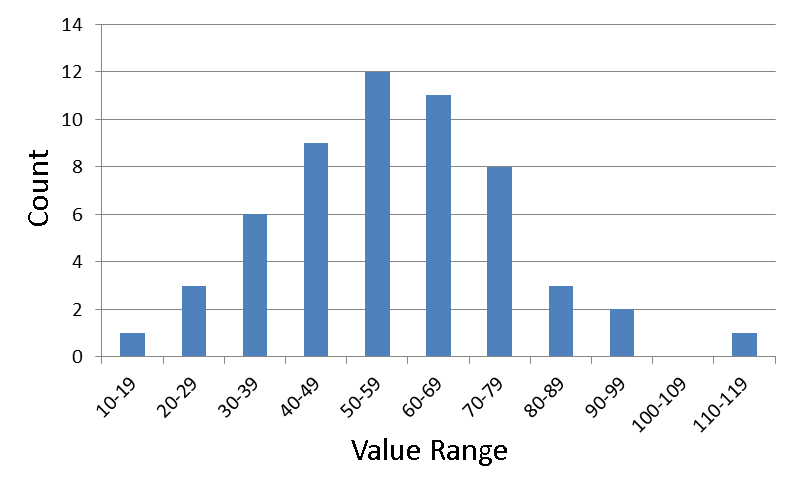

| Author: | Robbert de Groot |
| Date: | 2021-06-26 |
| License: | Creative Commons 0 (CC0) |
| Anything that can be represented as a number is a variable. Say Hair Color, Gender, Skin Color, Income, Errors made, Height, Weight, Age, etc. | |
| A specific representation of a variable is a value. Let us take Hair color for instance as a variable. A value could be 1 for Black Hair, 2 for Brown Hair, 3 for Blond Hair, 4 for Red hair, 5 for White hair, etc. Or Height as a variable can be the a number given in a length measure (inches, feet, mm, cm, m, etc.) | |
| A variable that is measured on a scale of uniform units. Height in inches/cm, Income in dollars, etc. | |
| A variable that is broken down into categories. Hair color (Black, Brown, Blond, Red, White,...), Gender (X, XX, XY, XXX, XXY, XYY, XXXX, XXXY, XXYY, XXXXX, XXXXY), etc. With categorical values you would assign a number to each of these unique values (see value for example.) However you would not do operations like average as that would make very little sense since the numbers you assign to the values are not meaningfully different (1 does not mean it would be less than 4 in this case.) | |
| For categorical variables you will be dealing with counts or percents of values. How many people have/What percentage of people have... red hair for instance. Counts and Percents can be used as a Measurable Variable. So doing averages, differences, etc. on Counts and Percents is valid; it isn't on Catergorical variables. | |
| Any variable that make sense to be used in arithmetic formulae. Measurable variables, Counts, and Percents. | |
| A collection of numbers belonging to a Quantitative Variable or a Catergorical Variable. Usually represented in a table of some form. | |
| A value recorded as part of data. Could be a reading from an instrument, and observation of a categorical value, a test to quantify someone's emotional quotient etc. | |
| A value that described something for a collection of data. Lets say we have data that breaks down the number of heart attacks in men in each age group of 10 years. The age group 40-50 may have far more events than the age group 80-90. Why? Population size of those groups may be very different. 40-50 will probably be much larger a group than the 80-90 group. So if you divide by the size of the group you have a rate of heart attacks for that age range and that will paint a different picture. | |
| A value that is representing another value. Some values to record are difficult to make sense of because they are so small or large that you can not easily pick out what the value means by looking. So as a way to make life easier you may change it in such a way to make the differences easier to spot. Say, normalize the values to some constant value like, recording the speed of a vehicle by how much faster/slower it is moving compared to 100Km/h. A table will have numbers like, 0, +12, -5, etc. | |
| We don't live in an ideal world. Everything has tolerances, and errors. As a result all measurments will vary. Whether it be the accuracy of the tool, the user of the tool, the aparatus of the experiment, environment effects, population makeup, there will be variations to your data. | |
| The variation in data of a variable. The spread of recorded values across all values recorded. The probability of certain values should be observable when looking at the distribution. | |
| The center most value of the data. | |
| The shape of the distribution on a plot is roughly balanced on both sides of a center point. | |
| The shape of the distribution on a plot is heavily weighted to one side or another. | |
| The shape of the distribution on a plot has sections where there are no values. | |
| The distribution on a plot has data points that do not follow a shape or trend of all the other data points. | |
| The number of values that belong to a certain range of values. | |
| Typically represented as a percent. Taking a frequency and dividing it by the total number of samples will give you a percent of that frequency in the sample set. How likely a value in a range will appear in the data. | |
| A table that gathers all the value ranges and reports on the frequencies of values found in each value range. | |
| Error that occurs when you limit numbers to a certain accuracy, those numbers will be rounded up or down. Roundoff Errors can accumulate and the sum may not be exactly what you are expecting. |
When presented with Data you need to know what that data is 'Measuring'. So...
What variable does the data belong to will tell you will what the data represents.
What conditions is the variable limiting it values to will tell you what the researcher eliminated from the data as being inappropriate. This can be very important if you plan to use the data. If you see something like unemployment rate of a country. And then someone is comparing that rate with another country's unemployment rate, you need to know if you are comparing apples to apples. One country can come to their rate of unemployment very differently than another country. If that is the case the numbers are not measuring the same value and the comparison should be taken with a grain of salt or skepticism.
What units are the numbers representing is important to ensure you are dealing with numbers you expect. Say we have multiple tables recording speed. One table could be using Km/h, another average Km/h over a period of time, another Miles/h over a particular stretch along a route, etc.
What instrument was used in that measurement could vary as well. Data could be suspect if the tool used to measure has known defects or if the user of the tool was not properly trained in its use. Data values could vary if using different tools.
What accuracy is the instrument could limit your results if that tool has an accuracy far lower than what you require.
Is the measurement applicable to your needs will be up to you to decide. Above indicates some of the problems of just blindly accepting data if you do not take into account how that data was collected. If you use data that doesn't make sense to be used in your particular analysis, then your analysis will be suspect or defective.
A distribution of values in a variable will give us an idea on the probability of certain value from showing up in our data.
Given a collection of numbers, remove the most significant digits from the number (stem) leaving the lease significant numbers (leaf) and then display them on the plot.
Data: 19 21 22 25 31 32 34 34 34 38 41 42 43 43 45 47 47 48 49 50 50 51 52 52 53 54 55 55 55 57 59 60 61 64 64 64 67 68 68 69 69 69 73 74 75 75 76 77 78 78 81 82 87 96 97 113 StemPlot: 1|9 2|125 3|124448 4|123357789 5|001223455579 6|01444788999 7|34556788 8|127 9|67 10| 11|3
With this display you can see a shape of the distribution, skewness, roughly the center value.
Median is the center most value. To find this you would count towards the center the same number of values from each end. Out data is sorted already but typically you may not get data in that form. Ther eare 56 values so the median will be the 28th value 55.
This one has only one peak ans is pretty symmetric. This is not always the case, you may end up with multiple peaks or skew to one end or the other.
You may be able to spot deviations from the shape. Gaps, and outliers that fall outside of the pattern. In this case 113 would be considered an outlier since it doesn't follow the shape of the distribution.
Back to Back Stem Plot
8| 1|9
5| 2|125
42| 3|124448
84| 4|123357789
992| 5|001223455579
961| 6|01444788999
830| 7|34556788
8552| 8|127
64221| 9|67
76432210|10|
654|11|3
Stemplots are not great to display large amounts of data. You can break them down in an effort to get a better looking plot out.
Say you have 100 numbers ranging from 0 to 100. You can use a stem of 10s and a leafs of 1. But that may mean one or more leaves having a lot of leaf values. So instead you can split up the leaf to 0-4 and 5-9.
0|1 0|67 1|11234 1|556678899 2|0122 ...
Very similar to a stemplot but in this case the graph doesn't explicitly list the data values. It just shows you the distribution of those values.
1|* 2|*** 3|****** 4|********* 5|************ 6|*********** 7|******** 8|*** 9|** 10| 11|*
The above is showing the exact same data as the stemplot. As an ASCII graph. However modern graphics will allow you to display this instead.

Histograms are more flexible than Stemplots as bars they show are not limited to a more restrictive stem. They can represent a range of values. The only restriction is that each bar has the same width, range difference. Although not present in the above graph, the vertical and horizontal axis should be labelled.
This data can also be represented in a Frequency Table. This table holds a summary of the data being displayed.
Range Count Percents ----------------------------- 10- 19 1 1.79 20- 29 3 5.36 30- 39 6 10.71 40- 49 9 16.07 50- 59 12 21.43 60- 69 11 19.64 70- 79 8 14.29 80- 89 3 5.36 90- 99 2 3.57 100-109 0 0.00 110-119 1 1.79 ----------------------------- Total 56 100.01
In the above table we are showing the counts (Frequency) and a Percent. The percent in this case called a Relative Frequency as it a value that represents the frequency with respect to all the other frequencies in the table.
A keen eye sees the total for percents is not 100. This is due to roundoff error as each percent above it was rounded to the second decimal place.
The above histogram could relabel the vertical axis from Count to Percent and the shape of the distribution or the information displayed will not change. So instead of a Frequency Historgram, the graph becomes a Relative Frequency Histogram.
The benefit of a Relative Frequency Histogram is that you may be able to compare histograms. For instance, you might be recording data from two geographical locations and come up with two data sets. One data set could include many more data points. A Frequency Histogram of the two locations will have a different range in the vertical but using a Relative Frequency Histogram the range (0-100%) will be the same. And then you can compare the two regions.
In general the area of a bar in the graph should be proportional to the frequency. Keeping the width fixed would be important. There are cases when you may need to break this rule.
A good Histogram will have an appropriate number of classes (ranges, bars) to break up the data. If you have too few classes then there may be far too many values in a class and you may lose some nuanced information over a more refined range of classes. Too many classes and you may end up with too few values per class to give a good representation of a distribution.